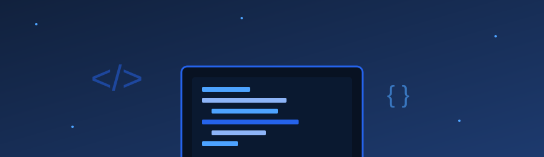

About Me
Who I am, the IT career path I'm aiming for, the skills I want to learn, and my three goals for this course.
Read moreHi, I'm Group 1, a student exploring the world of computing. This site documents my journey through CC 101 — from the industry and history of computers to the parts inside them, and finally to building this page with HTML5 and CSS.

HTML5 & CSS<!-- My journey -->
<h1>Hello, world</h1>
<p>Learning HTML & CSS</p>
/* still building */
Feel free to look around. Use the navigation above or jump straight into a section below.
Who I am, the IT career path I'm aiming for, the skills I want to learn, and my three goals for this course.
Read moreA review of Lessons 1 to 6, a timeline of computing, labeled computer parts, and security tips.
Read moreA simple form to reach me, plus two reliable websites I use when learning.
Read moreEvery lesson connects: the industry, the machines, and the code that runs on them. This site is the proof.